|
2016 Report on the State of the PLAN 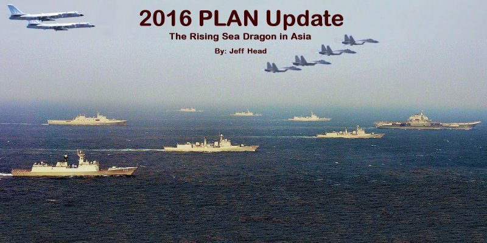 Note: For all photos in the report, refer to This Flickr Album for high resolution images of each.
7. CHINA'S SOUTH CHINA SEA ISLAND RECLAMATION Over the last year, efforts by the Chinese to reclaim land/islands in the outh China Sea have been bearing fruit...and have been in the news. This should never have come as any surprise. The Chinese, beginning in the 90s, built outposts on numerous shoals and reefs in the Sotuh China Sea. Usuaully these were well built concrete structures housing a few men and perhaps radar and some anti-aircraft weapons. Several of them had good piers for vessels to dock and resupply. The Chinese made it clear that they were not only claiming, but were intent on improving their possiessions in the South China Sea. Starting in 2012 and really picking up momentum in 2013, the Chinese began massive land reclamation efforts in the South China Sea on seven of these shoals/reefs. Clearly, with the logisitcs required to accomplish this level of work, this was something that had been planned and prepared for several years, with supplies and material being built up to support their aggressive schedule starting in 2012 and 2013. The effort has been gargantuan and very telling. In the place of small concrete fortifications from before, we now see entire islands with deepened bays and lagoons, full pier and docking facilities, road ways, desalinization, power and other infrastructure...and on three of the islands...10,000 foot runways with control towers, revetments and shelters. Those three islands are very tactically situated to provide mutual support to one another in times of crisis. It is clear that the Chinese, in order to protect their interests in and flowing through the South China Sea, have established a huge footprint there, and are now improving and manning their new islands and facilities. To get an overall feel for the accomplishment, here are four of the seven islands, with insets showing what the early structures looked like: 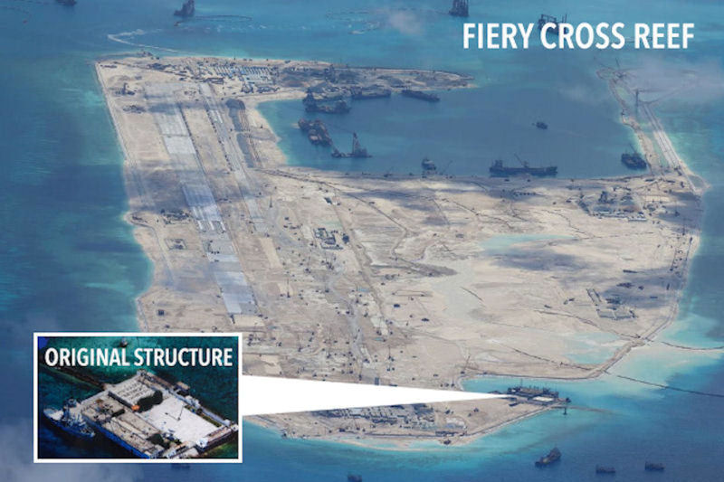 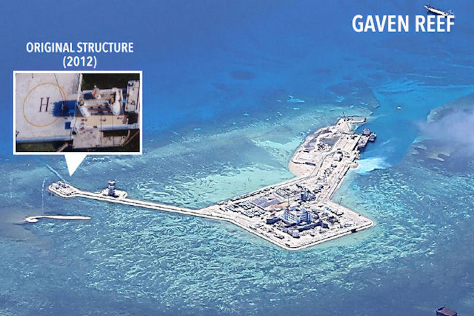 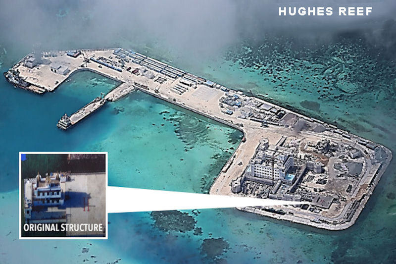 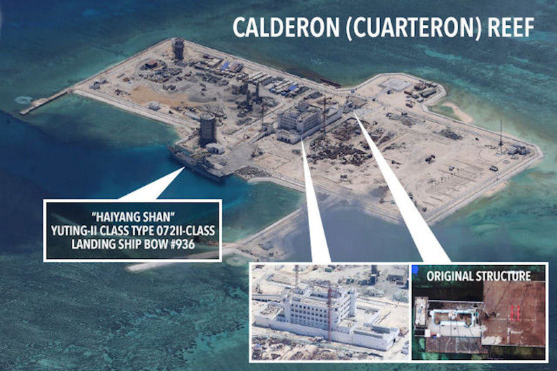 To better understand what took place on the islands as the material was jetted in place from the very large dredging vessels, and then worked into complete ilsands, see these pictures: 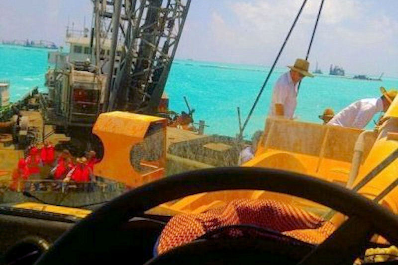 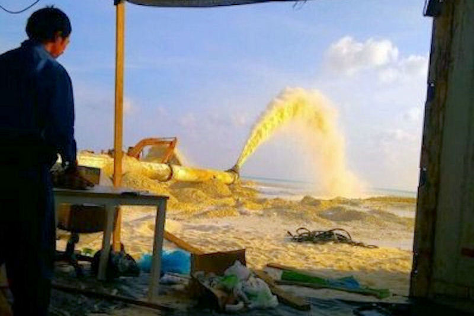 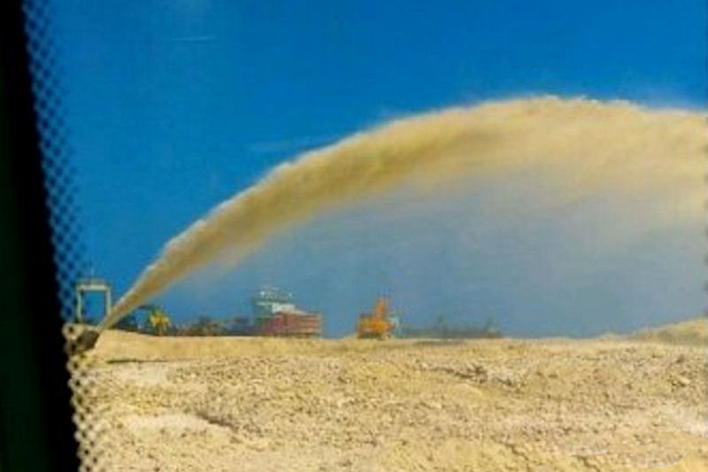 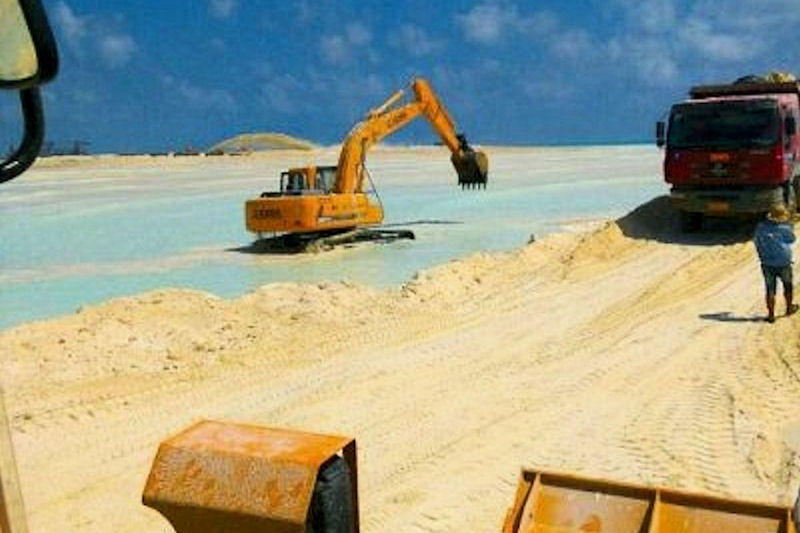 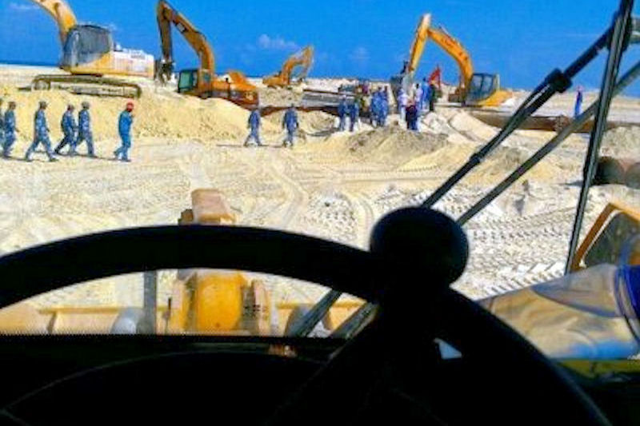 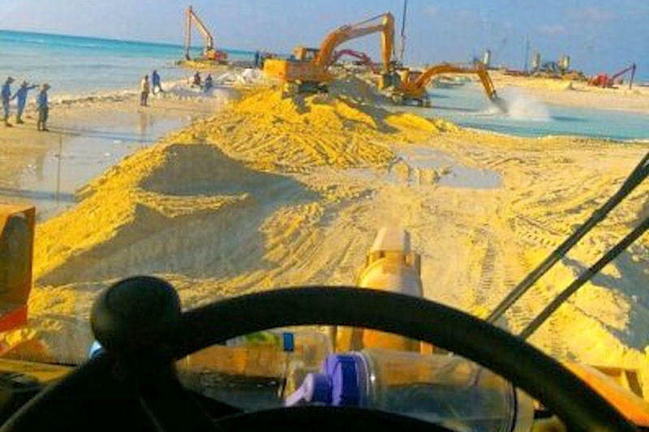 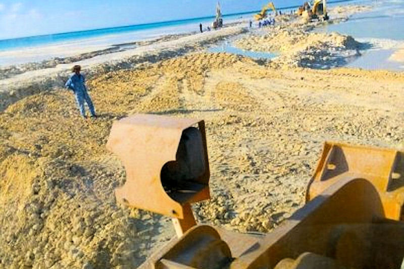 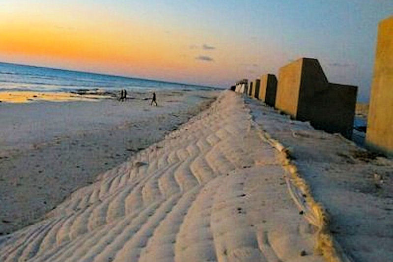 Now, according to maritime law, artificial islands like these do not warrant a 12-mile limit in terms of territorial limits. As the Chinese began completing work on them, they began claiming that these islands were to be considered full Chinese soverign property with 12-mile limits like natural islands or the mainland. In answer to that, the US began flying patrol flights near the islands. Ultimately, the US announced that it would not recognize the new Islands as full mainland or natural islanda with a 12-mile limit, and announced plans to conduct Freedom of Navigation (FON) and Innocent Passge exercises around some of these islands. The United states Navy them conducted those exercises. There was some diplomatic displeasure expressed on each side about these events, but they passed without incident. 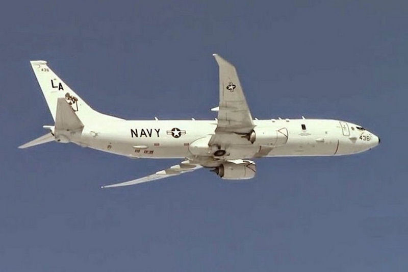 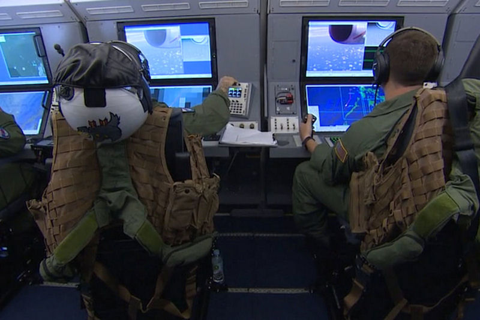 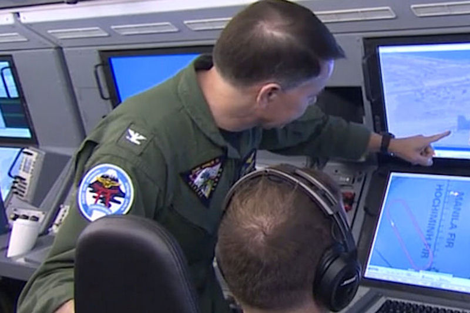 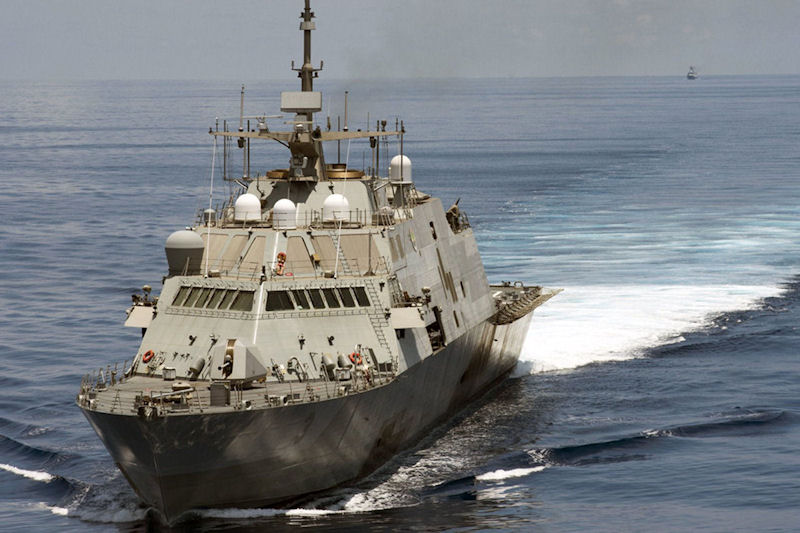 Two things have become clear as a result of these activities.:
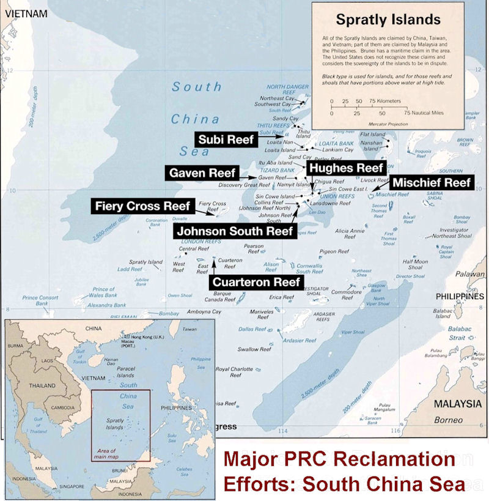 It is expected that the Zubr Air Cushion Craft, the Type 056 corvettes, the Type 054A friagtes, along with Chinese submarines and other vessels will frequent the South China Sea and these bases. In addition, the Chinese have the Type 904 stores ships to help in their resupply, as well as three 10,000 foot runways in the area now to also conduct all sorts of resupply and other exercises. While the US and its allies will conduct exercises in the area, the Chinese now have strong facilities and bases to counter any such exercise and to make their presence felt. ' Short of the US and its allies conducting similar tremendous reclamation efforts with nations like Vietnam, the Philippines, Malaysia, and others, who also have reefs, shoals, and islands which they claim, none of the other claimants can hope to match the capabilities of the Chinese in this area. And it is very doubtful that nations like the US, Australia, India, and perhaps Japan will have the will to establish a counter program with those smaller nations. The result is (and will be) that the Chines position in the South China Sea has been immensley strengthened.
Go to 8. Summary of the 2016 PLAN Report RETURN TO MAIN PAGE OF THE 2016 PLAN REPORT
Other links of Interest:
World-Wide Aircraft Carriers
|